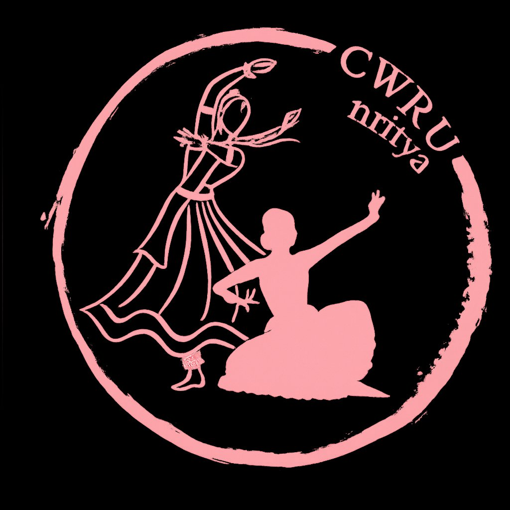

CWRU's NRITYA and NAADAM present
Ithihasa Anubhava
Stories of the Gods, brought to the stage
In Eldred Hall from 3–5 PM

CWRU Nritya is Case Western Reserve University's premier Indian classical dance team with expertise in Bharatanatyam, Kuchipudi, Kathak, and Odissi. From staging productions with live orchestras and choreographing for wedding sangeets to supporting campus philanthropy events like Spartanthon, Nritya is a vibrant part of the community. They take pride in performing across Cleveland, from the Cultural Gardens to the Cleveland Museum of Natural History, with pieces that portray meaningful stories from Hindu mythology, historical events, and contemporary themes.
This past year, Nritya made their return to the national competition scene after several years and placed 3rd at Motor City Dhamaal.
CWRU Nritya is Case Western Reserve University's premier Indian classical dance team with expertise in Bharatanatyam, Kuchipudi, Kathak, and Odissi. From staging productions with live orchestras and choreographing for wedding sangeets to supporting campus philanthropy events like Spartanthon, Nritya is a vibrant part of the community. They take pride in performing across Cleveland, from the Cultural Gardens to the Cleveland Museum of Natural History, with pieces that portray meaningful stories from Hindu mythology, historical events, and contemporary themes.
This past year, Nritya made their return to the national competition scene after several years and placed 3rd at Motor City Dhamaal.
Meet our musicians!
Special Guest Performers
Sri Lalit Subramanian
Sri Lalit Subramanian is an accomplished Indian Classical vocalist and percussionist from Cleveland, OH. Originally from Pune, India, Sri Lalit received his vocal training studying Carnatic music under Sri Tiruvarur Girish, Sri Neyveli Santhanagopalan, Smt. Alamelu Mani, and Hindustani music under Pandit Shekhar Kumbhojkar. His percussion training includes Tabla under Pandit Anand Godshe and Mridangam under his cousin Sri Vijay Shriram. A Sangeet Visharad and YuvaWani artist with All India Radio, Sri Lalit has performed at the Kennedy Center, Krannert Center, Walt Disney Concert Hall, Lincoln Jazz Center, Cleveland Thyagaraja Aradhana, and Sabhas in India. He also runs his music school Madhuralalya and maintains a career as a principal engineer specialising in radiation oncology.
Keshav Coimbatore
Keshav Coimbatore is an Indian classical music student and disciple of Sri Lalit Subramanian for Carnatic vocal music, tabla, and mridangam, and of Smt. Shruti Aring for violin. He began learning tabla at seven years old and developed a passion for accompanying bhajans on the tabla and harmonium. Outside of music, Keshav is a high school sophomore actively involved in robotics, Model UN, and is vice president of Stock Market Club.
Ensemble Musicians
Sweta Chivukula
Carnatic Vocal
Maanyav Gangaraj
Carnatic Violin
Sara Elanchezhian
Nattuvangam
Saanvi Gutta
Carnatic Vocal
Sumedha Jayaraman
Carnatic Veena
Anurag Rakesh
Hindustani Sitar
Srivatsa Vokkarane
Carnatic Violin
Sanjana Vidhyacharan
Carnatic Vocal
Mahika Krishnamoorthi
Carnatic Vocal
Sanjana Kumar
Carnatic Vocal
Manasa Venkataramana
Carnatic Flute
Satya Parameswaran
Carnatic Violin
Smera Arkalgud
Hindustani Vocal
Manasi Karthikeyan
Carnatic Vocal
Gayathri Seethamraju
Carnatic Vocal
Bhuvisha Sunkara
Carnatic Vocal
Avaneesh Palaconla
Carnatic Vocal
Meet our dancers!
Nivedita Srinivasan
Bharatanatyam Co-Captain
Bhoomika Khatri
Kathak Captain
Minaakshi Gentela
Kuchipudi Captain
Rhea Sharma
Bharatanatyam Co-Captain
Anshika Rath
Odissi Captain
Samitha Jonnalagadda
Bharatanatyam
Rachana Gurudu
Bharatanatyam
Gauri Nair
Bharatanatyam
Neera Ramanatham
Bharatanatyam
Janani Rajan
Bharatanatyam
Srila Munukutla
Kuchipudi
Sahana Shivakumar
Bharatanatyam
Dhriti Tattari
Bharatanatyam
Teju Sanikommu
Bharatanatyam
Ananya Velan
Bharatanatyam
Viranshi Vira
Bharatanatyam
Isha Daxini
Kathak
Eshita Kadiri
Kuchipudi
Amulya Buddha
Kuchipudi
Sahaara Enjeem
Kuchipudi
Deekshanjani Tummula
Bharatanatyam
Rishika Santhebennur
Bharatanatyam
Deetya Narsipur
Bharatanatyam
Srilalitha Nair
Bharatanatyam
Priya Garg
Kathak
Prisha Parmar
Kathak
Nandini Goel
Kathak
Pranavi Annaluru
Kuchipudi
Anu Dhananjit
Bharatanatyam
Chandra Kadali
Bharatanatyam
Sufiya Kaul
Bharatanatyam
Meha Sekaran
Bharatanatyam
Smera Arkalgud
Bharatanatyam
Prithika Padmanabhan
Bharatanatyam
Sandra Haridas
Bharatanatyam
Rhea Kandlapally
Bharatanatyam
Program Details
Seating starts at 2:30 PM · Event starts at 3 PM
We kindly ask you to:
- Please silence your electronic devices and refrain from using them during the event.
- Please enter and exit the auditorium quietly.
- Please try to refrain from leaving the hall in the middle of a performance.
- Please refrain from having conversations during the performance.
Pushpanjali
Raagam: Gambheera Nattai | Talam: Adi
Dancers
Nritya
Musicians
Sanjana V., Manasa, Satya, Sweta
The opening act of our performance is the Pushpanjali, an energetic invocatory dance inspired by Maharaja Sri. B. Krishnadasar. Setting the tone as a sacred "offering of flowers", this piece marks the optimal beginning of our recital. You will feel the dedication of Nritya's performers as they make an offering to the divine and pray for blessings of the audience. Most importantly, don't miss the beautiful salutation to Bhumi (Mother Earth), asking for her blessings as they begin dancing upon her feet. This vibrant introduction offers a glimpse into the elegant and rhythmic beauty of one of our dancers, setting an auspicious and spectacular tone for the recital ahead.
Maathe
Raagam: Kannadaa | Talam: Adi
Dancers
Sofiya, Sunatha, Ananya, Rhea K, Sandra,
Neera, Rachana, Prithika, Janani
Musicians
Sanjana V., Manasa, Satya, Sweta
Composed by Hariharasudha Maithri Bhagavathar and choreographed by Bharatanatyam Co-captain Nivedita, "Maathe Meenakshi" will be performed as a beautiful imagined "salutation of Goddess Parvati". This piece illustrates Parvati as the primordial Mother of the Universe, the source of the three Gunas, the manifestation of Golden Parvati, ruler of Lord Shiva. Drawing from Soundarya Lahari and her own divine imagination, she brings the Kamakshi from cool sanctuaries of Mother Meenakshi and Kamakshi River into one, casting her in the "Life Force" residing within all living beings and the very center of the cosmos. This spirituality is matched by intricate footwork and formations during the Swaram passage, blending devotion with rhythmic precision.
Baaje re Muraliya
Talam: Adi
KATHAK
Dancers
Bhoomika, Mia, Priya, Prisha, Nandini
Musicians
Sweta, Anurag
Parandhamane
Raagam: Bageshri | Talam: Adi
Dancers
Nivedita, Sunatha, Rachana, Gauri, Teju, Ananya,
Deekshanjani, Viranshi, Neera, Srilalitha, Anu,
Prithika, Ann, Rishika
Musicians
Bhuvanitha, Mahika, Sanjana K,
Maanyav, Satya, Sanjana V
Composed by S. N. Omanakuippa Pillai, the Parandhamane is a popular devotional piece reimagined for this show, allowing our audiences to experience the full depth of both technical rhythm and supreme storytelling. As hits the inspiring stories of each stanza, the protecting divinity of Rama and his unwavering grace unfold through breathtaking footwork and intricate formations — a true testament to the team's synchronicity, showcasing the balance of strength and grace as we celebrate the presence of the universe.
Madhurashtakam
Raagam: Kambhoji | Talam: Khadi
Dancers
Gayathri, Anurag
Choreographed by Guru Pankaj Chaturvedi, the Madhurashtakam journeys through the childhood of Lord Krishna through the infinity of a mother's love. Each stanza is a different moment of Krishna's life — from his birth to his playful, mischievous youth — each move imbued with his charming nature, celebrating Krishna as a divine symbol of love and devotion.
Marakata Mani Maya Chela
Raagam: Janaranjani | Talam: Adi
KUCHIPUDI
Dancers
Minaakshi, Srila, Jyoti, Sahana
Musicians
Sanjana V., Manasa, Satya
Sargam
Talam: Adi
KATHAK
Dancers
Bhoomika, Mia, Priya, Prisha, Nandini
Musicians
Sweta, Anurag
Thillana
Talam: Adi
Dancers
Nivedita
Musicians
Sweta, Maanyav
A thillana traditionally serves as the high-energy finale of a Bharatanatyam recital. This one was composed by Dr. M. Balamurali, one of the greatest Carnatic musicians of the 20th century, and choreographed by Nivedita. Unlike other thillanas, this piece weaves an intricate conceptual layer — the dancer depicts the motion of a majestic eagle in full flight. As the dance crescendos, rhythm and devotion elevate together into a glorious celebration of the art form, honouring the divine source of dance and the present journey of dance at CWRU.
Mangalam
Raagam: Saurashtra | Talam: Adi
Dancers
NRITYA
Musicians
Gayathri, Anurag
This performance closes with the Mangalam, a prayer of gratitude to the divine, the audience, the musicians, and the orchestra. Just as the Pushpanjali opened our journey into the spiritual world, the Mangalam is our humble and heartfelt farewell. The beautiful melody of Saurashtra weaves the ensemble into a unified whole, leaving the stage with a sense of peace and universal blessing.
Support Us!
Your generosity helps CWRU Nritya and Naadam continue bringing the beauty of Indian classical music and dance to our community. Every contribution — big or small — makes a meaningful difference.
Funds support costumes, live music, guest artists, workshops, and the training that helps our students grow as performers and preserve these ancient art forms.
Donate Now